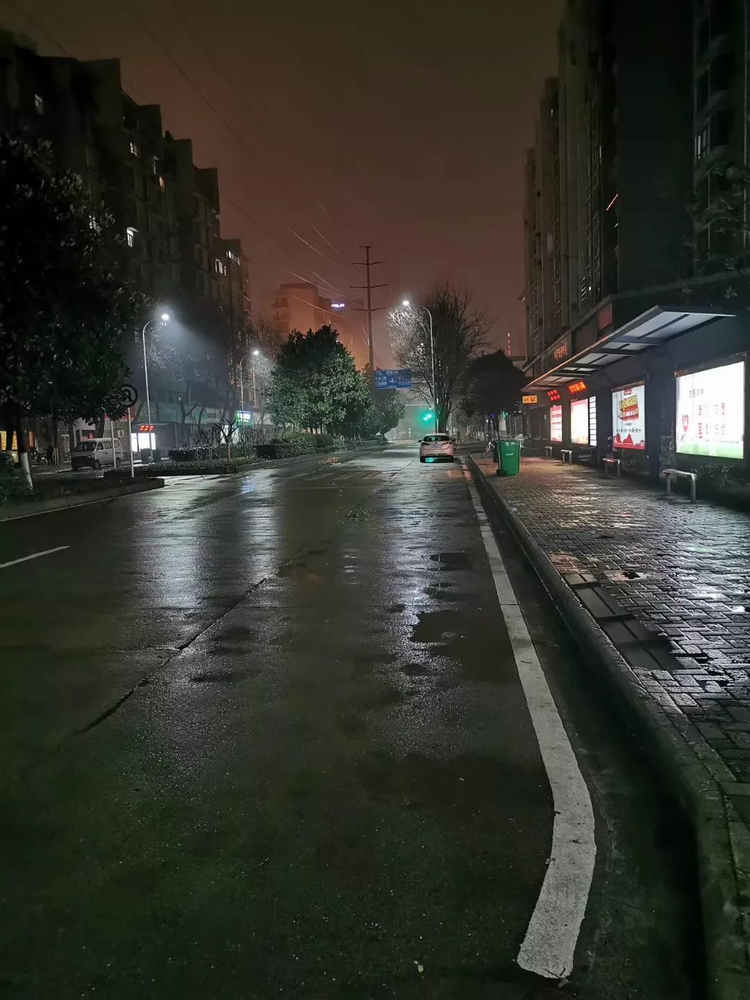
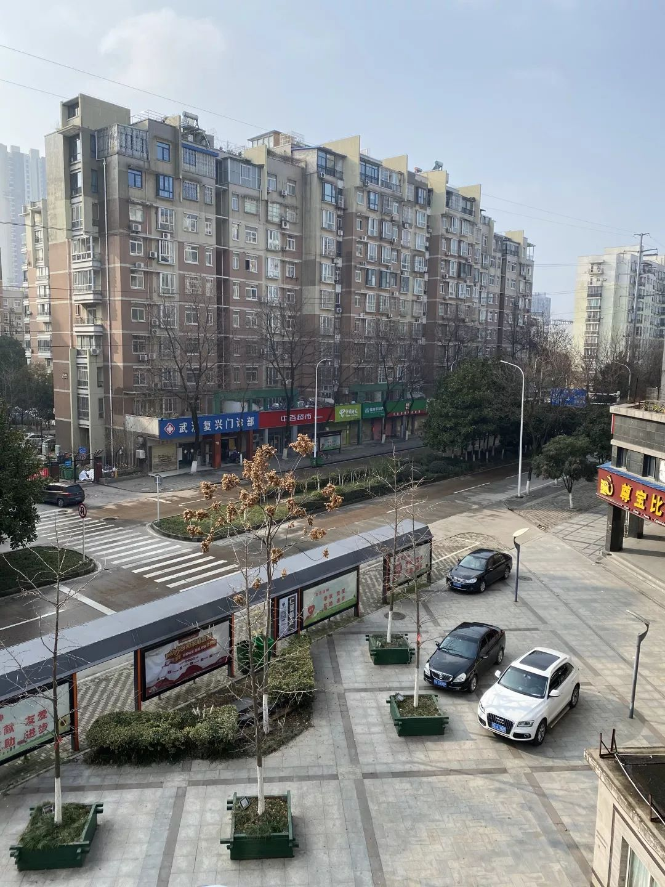

武汉疫区口述：这3个习惯，一样不能少
原文链接 备份链接 非常时期，武汉成了全国人民挂念、祈福的城市。封城后，武汉人民的真实生活是什么样？ 正和岛自1月26日起特别推出《叶青：我在武汉疫区的第N天》专栏。叶青是一位定居武汉40年的市民，也是一名学者和官员。接下来的一段时间，他 …
【编者按】
28日，我们收到了一位名为“尘香”的读者来信，她是武汉人，退休在家，和丈夫、女儿、女婿一起留守在武汉市江汉区：截至2020年1月29日24时，武汉市累计报告新型冠状病毒感染的肺炎病例已达2261例，死亡129例。武汉这座城市正在以各种各样的方式被人书写。各种情绪被放大，各种“大词”频现报端。
灾病无情，但生活依旧要继续，“尘香”用极简淡的文字，记录了她作为身在后方的人，在勉力维持小家正常运转的同时，对这座城市特殊状态的注视：女儿去超市前的“全副武装”、女婿从工地归来泥泞的双腿、久违的大晴天、难得一吃的猪脚汤……生活在流淌，记录本身也是一种抵抗。

今天是大年初二，已经四天没有出门了。
白天大部分时间呆在客厅，我做着平时想做又没时间做的针线活，老公和孩子们都不停地刷手机。
偶尔站在晾台望去，四周静悄悄，就象无人区一般。马路上偶尔一两个行人戴着口罩，低头匆匆而过，平日拥挤的马路静静地躺在那里无声无息。
姑娘（编者注：对女儿的昵称）全副武装进超市，里面的货物没有平时那么繁多，稀少的顾客静默地挑选必须的生活物品，全没有了往日的喧哗。
元月5日，我们还应叔叔相邀回老家相聚，没人提及肺炎病情。市内派发游园票、举办万家宴正常进行，一如既往。
姑娘本来是计划26日去广州玩的，私下听说疫情严重，19日就把车票退了，并立即通知她的公公婆婆接宝宝离开武汉。我当时就说她小题大作，觉得还没到这个地步。不至于。
我本还打算趁他们带宝宝走，我也出去散散心，自驾去广西一带走走呢。那时起，姑娘出门是戴口罩的，也要我把口罩戴上。我也经历过非典，感觉没有她说的那样可怕，在封城前也没有戴口罩出门。因为我带外孙吧，本来就出门少。
我记得这一天正好是有太阳，我还忙着在家清洗凉晒。晚上亲家赶到，第二天一早就带着宝宝急匆匆离开了武汉。我和老公、女儿、女婿一同留在了武汉。
老公没有退休，他是在工地上工作，每逢年过节工地上都要安排人员值班的，他初五初六值班。姑娘单位也要值班，她大年初一值班。女婿也是工地上工作，他也不能走。姑娘女婿要等到单位这些过年安排完了后才能离开。所以他们订的是初二走的票。但后来，就是你想出去，初二也出不去了呀。
20日晚间看电视，钟南山院士确定了武汉肺炎可以人传人。小道消息我一般是不信的。从电视上得知，应该是准确的了。但大部分人都感觉离自身还是遥远的。因为没有人说自己周围谁得了。当天晚上，政府、企业的各类联欢会、年会、团拜会、文艺汇演陆续照常进行，民众喜庆迎年，该干嘛干嘛。

21日开始下雨。
22日，我又去超市采买过年的物资。超市里热闹非凡，人来人往，人声鼎沸，一派过节的气象。人们还是喜庆洋洋，鲜有人戴口罩，大部分人完全没有感觉疫情正大山般压来。我想着家人不多，也没采购多少物资，够吃过年几天就行了。
23日一觉自然醒来，拿起手机一看：通告全市公共交通停运！出门必须戴口罩！这么大的一个城市，要封？肯定是事态严重了。这时电视上也播报多了，人们的关切点转向为疫情了，关注每天有多少新增的，网上有关的内容也渐渐多了起来。
意识到疫情严重，出门戴口罩，不走亲访友了，只打电话。连兄弟姐妹都只打电话。不出门，倒也能做些平时想做没时间做的事。
我母亲与妹妹住一起，就在对面小区，隔一条小马路，都没有去串门了。老母亲也觉悟高，主动打电话不要来。周围人没有染上的，我们并没有感到慌张。只是呆在家，不出门。四周从来也没有这般安静。
我家一个表姐，全家年前出去玩，本计划是年三十赶回的，没有想到进出武汉的通道都暂停了，只有在外过年了。航空公司全额退票大表姐一家。她们只有续租房子，把人家也吓死，解释半天，才让她们入住。
也是那天，女婿接到通知，明天一早得去蔡甸，参建武汉版的＂小汤山”。
大年三十24日，一早女婿就起床赶赴蔡甸。只剩下我、老公和女儿三人在家。街上也开始冷清了。
年三十晚上，直到春晚结束女婿才回到家，鞋子满是泥泞，疲惫不堪。进门洗手洗脸，我把外衣脱下洗清，赶紧端上热的食物让他吃，女婿边吃边讲述工地24小时施工情况，然后一觉睡到大年初一下午我们吃中晚餐。
大年初一晚，女婿又奔赴工地，接替白班员工。直到年初二快中午，施工一夜的女婿才满脚泥泞回家。

26日零时起，武汉机动车限行，感觉到开始是封城，控制不住，再就三镇隔断，让你不要在市内到处窜。女婿上报了车牌号，每天开私家车去蔡甸。我们在江汉区，离蔡甸三四十公里，现在空城不堵车，半小时能到。
27日，醒来就发现手机一条信息，一个认识的人昨晚被确诊为新型肺炎。立马询问与他有过接触的好友，情况如何。所幸目前与之接触的人一切安好，正自我在家隔离。希望一切安好！
为解决医院看病人多，如果有发热的先到社区门诊。但社区门诊的防护较医院还是差些啊。再就是人多救护车少，床位少。只要不严重，开点药先自我在家隔离。现在连普通的病都不敢生了。
一早，女婿又出发去蔡甸工地，不知几点能回。他每次上白班回家都到了晚上11点多钟，上夜班就到第二天上午10点才回。每天回来很疲惫，前阵子一直是阴雨天，满脚的泥巴。虽然我们要他多注意，但他说那么多人，怎么注意？不可能也做不到啊。
今天已是5天没出门了，家中的蔬菜也一点点地减少。本土只有三大超市还在营业，保障人们的日常生活物资，家中的物资还能抵挡几天，坚持！防护用品都保障给女婿用，我们都不出门，需求也就不大。上午喝鸡汤，吃饺子；下午喝鸡汤，吃饺子、面包。
我和女儿在家，一天只吃两餐，权当减肥，把主菜留给还在一线奋斗的女婿吃。三餐改二餐，一是睡到自然醒，起得晚些，再就是没有活动，也不饿，还有就是想把物资使用延长，多吃几天。
武汉的肺炎疫情已经漫延到全国除西藏以外的各地区，电视、网络每天疫情播报最新进展情况，每天都有新增疫情。
在家里都能听到小区小型消防车巡回播报的声音，告诫居民不要出门，尽量呆在家里，出门必戴口罩。
今天是大年初四，六天没有出门，外面静悄悄。马路上偶有一两辆私家车驶过，一两个行人戴着口罩进入对面的中百小超市。对面的一家医保定点医疗门诊依然在营业。有发热的病人先联系社区医疗门诊，以减轻医院的负担。
昨天晚上，各小区的业主微信群都在转发：8点打开窗户，齐唱《国歌》、《我和我的祖国》。晚上八点整，我站在晾台上，“武汉加油”的呼喊此起彼伏，因为太空旷，声音不是很集中。这些天，居民憋死了…..总算是听到了一些人声。我听到隐隐的歌声，说不上是什么感觉，眼眶突然就湿润了。

今天早上，一缕阳光透过窗缝射了进来。我趁着好容易出现的太阳，清洗被套、衣物。
女婿在家吃饭，老公做了四个菜，一家人一扫而光。往常女婿不在家吃，我们三人都是吃饺子或面条、稀饭，就咸鱼、腊肉。
姑娘、女婿去超市买点蔬菜，超市的人比前两天明显多些，带叶菜架上已无，方便面被抢空，只有肉类还充足。他们最终只买了些零食和最后一包方便面回来 。坐在沙发上，惬意地吃着零食，只觉得骨头关节似乎已经生锈了。
晚餐炖猪脚汤，烙肉饼。明天女婿又要出征，去施工现场，听说，火神山医院的地基建设已接近尾声。女婿说，这次有的私营者真的是不错。因为机械、物资不够，要找私营者调配，有的私营者按成本价。有的司机比他们还累。人可以休息，但机械不休息，司机有限呀，他们的工作时间还长。
难字当头，还是有有责任的人。
真希望明天听到“无新增感染人员”。
（本文根据尘香投稿与采访做一定补充整理）

小编：请问您是武汉人吗？在武汉生活多久了？
尘香：是武汉人，出去工作10年，后来又回到武汉了，工作至退休了。
小编：您觉得武汉封城、限行对您生活产生了什么影响吗？
尘香：对我来说，只是不能出门，关在家里。好容易有点休息时间，就在这几平米的房间了。
家中没有病人的，感觉这些还能忍受。不出门就是了，在家看看电视，电影。
上午还说封城对我们来说还好，中午倒个垃圾门开不了啦。电话联系店家，都回老家去了。幸亏老公在家，搬个板凳坐着捣鼓了半天，总算能开门了，但只能从里面开了，外面打不开了。家中要始终留人了。（要）坚持到店家上班了。封城，家中不出状况就不受大的影响，有一点状况就感觉到了不便。
小编：您觉得随着对疫情的重视，周围人的心态是怎么变化的呢？
尘香：开始封城，大家都很恐慌，害怕；随着时间的推移，大家也接受了这种隔离。现在就只是担心因工作必须在外面的人，怕他们会接触到，会感染上。大家对疫情的认识也不断加深，出门自觉戴口罩，尽量不去触摸外面的物件。
再有就是已经自我隔离了六七天了，什么症状也没有，心里也放心了。
小编：您女婿参建武汉版“小汤山”（火神山医院）后家里人的生活又有什么变化？还有其他家人参与到抗疫相关工作吗？
尘香：担心他呀，在外接触的人多，怕他感染上啊。回家就让他洗手、脱外衣、泡澡，给他泡维C的水喝。他在家吃饭，我们就吃正餐，他不在家吃，我们就随便吃。把有限的正餐留给他吃。
我妹夫公务员，过年也一直没有休息的。我堂妹也是的，到村到户宣传，告知村民。
小编：除了医护人员，还有很多武汉人也奋斗在一线。
尘香：是的。社区、物业、保洁，还有本土的超市，他们都在岗位上。医护人员是救命，这些人员是保障后勤，这么多人的城市还要生活。
小编：家人投身抗疫工作，您支持吗？除了担心还有别的感受吗？
尘香：人说国家有难，匹夫有责。现在城市有难，也有责啊。除了担心自己的亲人，也感受到了普通民众的奉献精神。网上的不相信，可实在的身边人的事是相信的。姑娘她们有认识的人，就自发组织物资运往医院。
分享你的故事，请投递至RUC新闻坊公邮
账号：rendaxinwenxi@qq.com
本期编辑：马冰莹 葛书润
图片来源：受访者尘香提供
美编：马冰莹
往期回顾

风暴中心：我家离华南海鲜市场很近｜来稿

有关传染病，你应当了解的六个事实 | 关注
澳大利亚山火：外媒聚焦报道背后的真相与谎言 | 关注

澳大利亚山火：外媒聚焦报道背后的真相与谎言 | 关注

报道中的少数活跃专家, 构建了我们眼中的AI世界 | 编译
[

他们这样回顾过去的一年和整个2010年代｜外媒盘点
特别策划
技术前沿
报道规范
趣闻杂谈
数据新闻习作
原文链接 备份链接 非常时期，武汉成了全国人民挂念、祈福的城市。封城后，武汉人民的真实生活是什么样？ 正和岛自1月26日起特别推出《叶青：我在武汉疫区的第N天》专栏。叶青是一位定居武汉40年的市民，也是一名学者和官员。接下来的一段时间，他 …
原文链接 备份链接 非常时期，武汉成了全国人民挂念、祈福的城市。封城后，武汉人民的真实生活是什么样？ 正和岛自1月26日起特别推出《叶青：我在武汉疫区的第N天》专栏。叶青是一位定居武汉40年的市民，也是一名学者和官员。接下来的一段时间，他 …
原文链接 备份链接 今天是“武汉日常”每日书的第四篇，在孝感的学生写到当地村民自发拦路封村，尽管道路后面的横幅还写着他们希望并且欢迎在外乡亲回家；有在黄石的编剧路过黄石最繁华的步行街，发现那里几乎没有任何动静；有居住在武汉市区自愿帮助陌生 …
原文链接 备份链接 作者 | 薛芳 孙宏超 相欣 安然 马关夏 李越 编辑 | 康晓 出品｜深网·腾讯小满工作室 欢迎下载腾讯新闻APP，阅读更多优质资讯 平平安安就是年。 突袭而至的新病毒能阻止很多中国人在这个春节里团聚，但没有什么能阻 …
原文链接 备份链接 本文由娱志The Review原创出品 华东师范大学传播学院学生娱评号 转载需申请授权 作者 | Moe，苏博 编辑 | 华实 导语 “自2020年1月23日10时起，全市城市公交、地铁、轮渡、长途客运暂停运营；无特殊 …